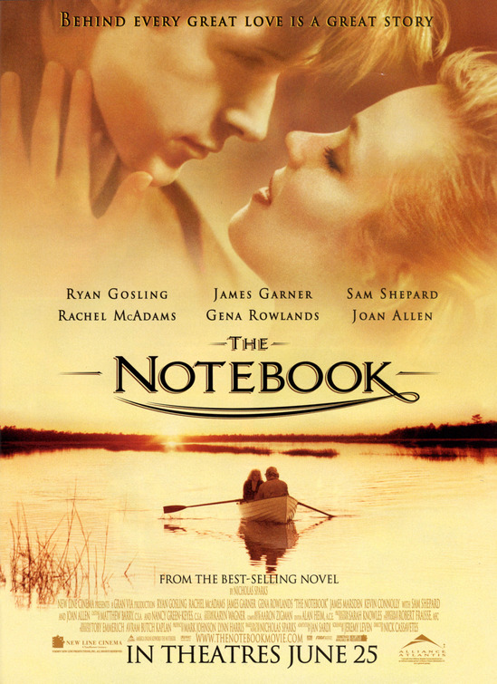

A story about love, memories, choices, and time.
🎬 One of My Favorite MoviesThe Notebook is one of my favorite movies because it tells a heartfelt story about love, the decisions we make, and the memories we hold dear. The movie stars Ryan Gosling as Noah Calhoun and Rachel McAdams as Allie Hamilton. What I like about this movie is that it does not only focus on romance. It also shows how people change, how difficult choices can be, and how some memories can stay with us for a long time.  Image source: IMDb 🏔️ Why This Movie Feels Personal to MeI grew up in Sagada and I am now studying Information Technology at the University of Baguio. Moving from a familiar place to a city gave me new experiences, new people, and a different kind of life. Because of that, some parts of the movie made me think about how life changes as we grow older. The people and places that were once part of our everyday life can become memories that we look back on. College has also given me experiences that I know I will remember in the future. "Some memories stay with us, even when life takes us somewhere else." 📖 The PlotThe Notebook follows Noah Calhoun and Allie Hamilton, two young people from different backgrounds who meet and fall in love during the summer. Their relationship becomes difficult because of their families and the different paths they take in life. After they are separated, Noah and Allie continue with their own lives. Many years later, they meet again and have to face the feelings they still have for each other. The story is told through an older Noah reading their story to an older Allie. The past can become part of who we are today. 🎭 Main Cast
❤️ Why I Like This MovieI like The Notebook because it is more than just a love story. It talks about memories, family, choices, and staying connected to people who are important to us. Growing up in Sagada, I experienced many simple moments with my family and friends. At that time, those moments sometimes felt normal. But as I grew older and started studying in Baguio, I realized that those simple moments can become some of the memories I value the most. This is one reason why I connect with the movie. It reminds me that life keeps moving, but the memories we make with other people can remain important to us. ⭐ My ReviewFor me, The Notebook is a memorable movie because of its story and characters. I enjoyed watching Noah and Allie's relationship develop and seeing how their choices affected their lives. Ryan Gosling and Rachel McAdams also made their characters feel believable. The movie has emotional scenes, but what I remember most is the connection between the past and present. My Rating⭐ ⭐ ⭐ ⭐ ⭐ ⭐ ⭐ ⭐ ⭐ 9 / 10💭 What I Learned From the MovieClick to read my reflectionOne thing I learned from the movie is that we should appreciate the people and moments that are important to us. Life can change quickly, and we do not always know how long certain moments will last. As a college student, I am also making new memories while dealing with school, responsibilities, and adjusting to life in Baguio. This movie reminded me to appreciate the people around me and the experiences I have now. 🔗 More About The Notebook📷 The Notebook Inspiration on Pinterest © 2026 | My Favorite Movie Webpage |